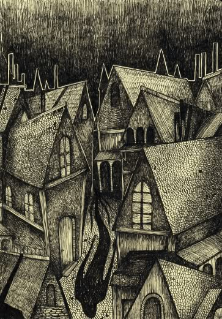

"Llegó K. al atardecer. El pueblo estaba cubierto de nieve profunda."
Capítulo 1SINOPSIS
"El castillo" es una de las novelas más enigmáticas de Franz Kafka. Narra la historia de K., un agrimensor que llega a un pueblo gobernado por un misterioso Castillo. K. intenta acceder a las autoridades con el fin de justificar su presencia y obtener permiso para quedarse, pero se enfrenta a un sistema burocrático impenetrable, autoridades inaccesibles y habitantes que parecen estar sometidos a reglas absurdas. La obra explora temas como la alienación, el poder, la burocracia y la imposibilidad de alcanzar una meta que siempre se aleja.